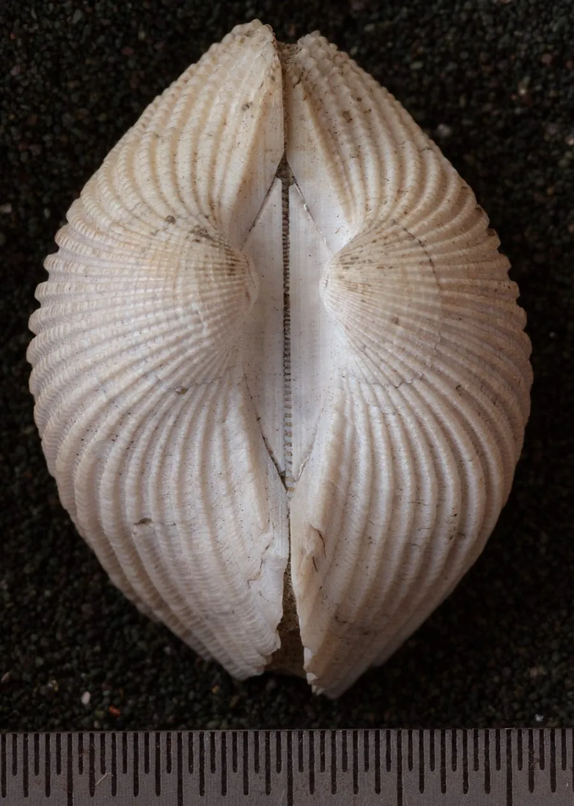

软体动物 · 动物界
毛蚶 Scapharca subcrenata

壳面覆盖褐色绒毛状角质皮的蚶类，中国北方沿海常见，肉味鲜美，但曾因富集病菌引发食品安全事件。
- 分类
- 门软体动物门纲双壳纲目蚶目科蚶科属毛蚶属
- 栖息环境
- 河口附近至水深十余米的软泥和沙泥底质
- 地理分布
- 西北太平洋，包括中国黄海、渤海、东海，朝鲜半岛和日本沿海
- 保护级别
- 尚无保护级别；为北方重要经济贝类
物种志
毛蚶的贝壳呈卵圆形，壳长约四至六厘米，壳质坚厚，两壳不等，左壳稍大，壳面有三十余条放射状纵肋，肋间有细密的横纹，壳表覆盖一层棕褐色的绒毛状角质皮，毛蚶之名由此而来。壳内面白色，壳缘有齿状突起。足部发达，能在泥沙中掘穴，水管短，靠滤食浮游植物和有机颗粒为生。它的血液也含血红蛋白，但肉色不如血蚶鲜红。
它分布于西北太平洋，包括中国黄海、渤海、东海，朝鲜半岛和日本沿海，栖息在河口附近至水深十余米的软泥和沙泥底质，常与血蚶混生。它以硅藻和有机碎屑为食，繁殖期在夏季，雌雄异体，幼虫经浮游阶段后附着到泥沙中。毛蚶是中国北方重要的经济贝类，肉味鲜美，可鲜食、腌制或制罐。由于它滤食时会富集水中的细菌和病毒，食用必须彻底加热，历史上曾有因生食引发甲肝流行的教训。目前尚无保护级别。
形态与习性
- 食性滤食硅藻和有机颗粒
- 壳长约四至六厘米，壳面有三十余条纵肋
- 壳表覆盖棕褐色绒毛状角质皮
- 栖息环境河口附近至水深十余米的软泥底质
- 繁殖夏季繁殖，幼虫经浮游期后附着泥沙
- 食用肉味鲜美，须彻底加热，生食有甲肝风险
趣味知识
- 毛蚶壳上那层褐色绒毛其实是角质皮，能防止泥沙磨损贝壳。
- 它和血蚶常生活在同一片滩涂，但毛蚶的肉色偏淡，没有血蚶那么红。
- 毛蚶滤食时会富集水中的病毒，上世纪上海曾因生食毛蚶暴发甲肝。